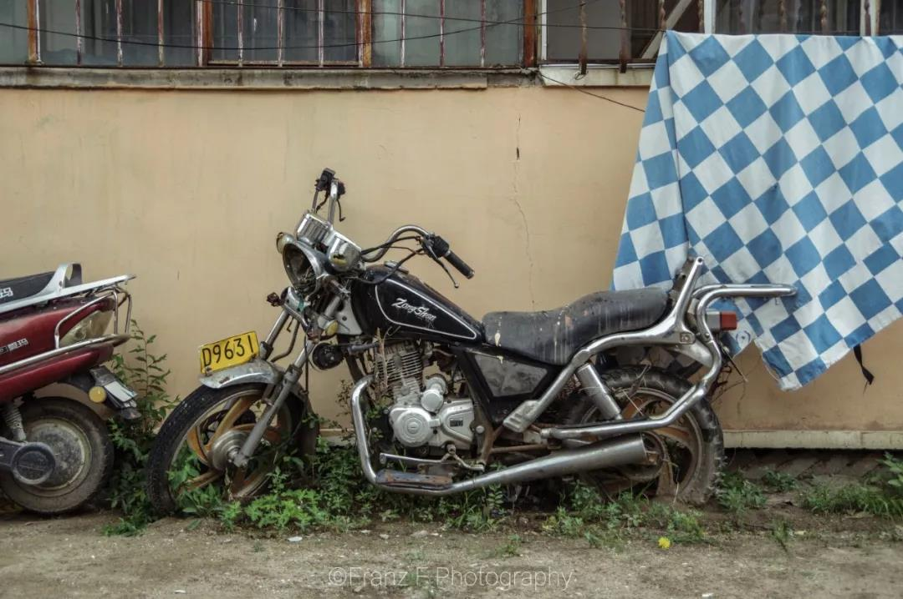

这一趟去满洲里的短途旅行，是在盛夏时节的七月末。
是和友人早已计划好的行程，只是没有料到，旅游旺季的满洲里实在有些火爆。直达的火车票早已售罄，只好先坐高铁到齐齐哈尔，再换乘一夜的绿皮硬卧。虽然距离并不算特别远，只是这座遥远的边境小城尚未开通高铁。默然空叹，东北的高铁建设已然落后了许多。
翌日清晨在火车上醒来，窗外风景已然变了模样，辽阔草原正是人们心中对于内蒙古的想象。火车此刻驶过的，正是呼伦贝尔。
这一趟去满洲里的短途旅行，是在盛夏时节的七月末。
是和友人早已计划好的行程，只是没有料到，旅游旺季的满洲里实在有些火爆。直达的火车票早已售罄，只好先坐高铁到齐齐哈尔，再换乘一夜的绿皮硬卧。虽然距离并不算特别远，只是这座遥远的边境小城尚未开通高铁。默然空叹，东北的高铁建设已然落后了许多。
翌日清晨在火车上醒来，窗外风景已然变了模样，辽阔草原正是人们心中对于内蒙古的想象。火车此刻驶过的，正是呼伦贝尔。
谈一谈满洲里吧。
呼伦贝尔市下属的县级市，一座小有名气的旅游城市，以坐落于中俄蒙三国交界处而闻名。这是她留给世人的寡淡印象。未曾来过的人，也许难以注意到，这座城市气质里浓浓的俄罗斯的烙印。
说起来，满洲里这座城市，本就是俄罗斯人建立起来的呢。
1897年沙俄开始修建中东铁路，作为西伯利亚铁路的支线。进入中国境内的第一站，是个重要的交通节点和口岸。彼时俄国人叫她满洲利亚，后来根据这个音译，省去最后一字，这座小城便得到了满洲里这个名字。
下车出站的时候，天空正下着小雨，时断时续。气温19摄氏度，竟在盛夏时分里感到微冷。原来让南方羡慕的避暑胜地，却都是北国苦寒的遥远边疆。
长长的人行天桥从铁路线上方跨过，天桥对面便是满洲里的北区。这座因铁路而生的城市，城区由铁路一分为二。北区的中心区域，是全市最繁华的所在。从一道街到五道街，映入眼帘的是行人、游客、俄罗斯人，是酒店、酒吧、旅游纪念品店，是悬挂着全国各地牌照和俄罗斯牌照的车辆，是热闹的步行街、密集的高楼大厦，是新建的模仿俄式风格的街区还有遗留下的历史建筑。
只是满洲里的白日显得平淡，这一派热闹景象还是要等到晚上。
入夜，霓红灯亮，街市灯火辉煌。世纪广场上游客熙熙攘攘。中苏步行街的尽头，中国人和俄罗斯人微笑着打量熊猫和北极熊手拉手跳舞的雕像。苏联红军烈士公园里，只刻着俄文字母的纪念碑下人们在凝望。北湖湖畔，暖黄色的路灯下，有人在唱着莫斯科郊外的晚上。
这繁华的模样如此迷人，就像一座城市仿佛只有A面才不容易被人们遗忘。
而那被遗忘了的B面的一角，便是南区的样子。
从那条天桥穿回，便来到南区。若整座城市是一张面孔，南区便是一副不希望游客看见的脸庞。
空旷的街道冷清又寂寥。楼房老旧而丑陋，残破的外墙上电线杂乱，向外一点便是土路和平房。忽而下起大雨，雨中的城市愈发显得破败荒凉。
于是，这样的破败和荒凉竟成了我三日旅程里，挥之不去的印象。

从火车站直行第二个路口，有一座满洲里市博物馆。一座略大的俄式二层小楼，里面展品不多，墙上的展板介绍着满洲里的历史。我们从雨中到访，却发现里面除了工作人员空无一人。没有旅行者，没有游客，清冷的历史无人诉说。空馆无言，空荡的走廊里唯有寂寥的落寞。
城区的东郊，有一座名为婚礼宫的建筑。实际上只是一座仿照古典欧洲教堂样式修建的仿古建筑。虽是模仿，细节却极其简陋粗糙。而且墙皮脱落、涂料褪色、石板碎裂，一副年久失修的破败模样。后面还有一座古怪的雕塑，颇似冷战时代东欧社会主义国家间流行的那种未来主义的荒诞设计。它们孤零零的矗立在东郊的山坡上，日暮时分，淡红色的阳光斜照在斑驳的墙上，零散的游人渐渐离去，我竟觉得这景象实在有一种荒凉的美，却又美的有一丝悲壮。
第二日的早晨，坐着二十分钟的火车去了邻近的扎赉诺尔。热门的几个景点，朋友和我都没有太大兴趣。出了极小的扎赉诺尔西站，便打车径直去了矿山公园。网上的资料里，矿山公园是一座废弃的煤矿，巨大的矿井四周有一圈圈环绕爬高的运煤小火车。可是我们到达的时候，却发现除了一个巨大的深坑以外什么都没有。据因送两个年轻人来到这个不毛之地的诧异的司机大叔说，火车和轨道大概五六年前拆掉了。现在矿井里也种上了树，完全看不出煤矿的样子。我们颇为遗憾，看了几眼便只好离开，改签了最近的一班火车回满洲里市区去了。煤炭没有留下，工业遗迹也没有留下，唯一留下的，便只有苍凉。
出城的大道一路向西，前面不远便是边境。拥挤不堪的公交挤满游客，终点站到了国门景区。一座高大的门型建筑矗立着，上面插着国旗。几条铁路从中间穿过。不时有火车缓缓驶过，汽笛鸣响，驾驶室里的俄罗斯火车司机向游客微笑挥手。游客众多，排了许久的队终于登上国门。对面的俄罗斯国门矮了许多，据说是从苏联时代沿用下来。再远处，隐约可以望见后贝加尔斯克火车站。雨已停了，阳光刺眼。脏灰色的天空下望着俄罗斯的大地，忽然觉得无比感伤。
回程的火车上，我竟感到一种莫名的迷失。在满洲里繁华缭乱却带荒凉的街区里，在波澜壮阔又偏安一隅的历史中，在彼岸繁荣过又衰落了的俄罗斯的目光里，在或有希望亦或失望的东北的未来中。
何必想那么久远呢。生活是现实的。列车驶入日暮，“就让我沉入黑夜，Manchuria，До свидания。”
--end--
一些思绪
俄罗斯文化大概是众多黑龙江人最熟悉的外国文化了。无论是饮食习惯还是其他，黑龙江或多或少都受到了俄罗斯的影响： 哈尔滨大街上俄式风情建筑随处可见且别有一番风情，红肠、格瓦斯、大列巴和当地风味融合在一起，成为家家户户桌上 的美味佳肴。
大概是因为中俄历史上曾有过得革命情谊和如今的友情，再加上和俄罗斯东南部土地相接，而且共享了同一个寒风凛冽的严冬，黑龙江人对于俄国文化有着不小的认同感和向往。
作为土生土长的黑龙江人，我印象中的俄式风情深存在于幼时大街上老人手风琴中的《喀秋莎》的旋律中。 后来接触到了俄国文学绘画作品，渐渐开始了解他的历史和文化，逐渐对俄式风情有了大概的框架。
因为语言的原因，我很少动过去俄罗斯看一看的念头————虽然离的很近————说来惭愧，我外公外婆都能说上一口流利的俄文， 我母亲也会几句，但是到我这里想学俄文则是心有余而力不足了。
此去满洲里，便是一个很好的更近距离地感受俄式风情的机会。虽然满洲里地处内蒙古，但是在区域上依然属于东北范围内，亲切的乡音让我在途中更加放松。
从城中破旧的居民区，到穿越国界的火车、夕阳西下的教堂，再到夜晚灯火辉煌的俄式大街，我能体会到这座城市中的颓废和希望；西方的华丽精致和东方的质朴简约杂糅在此，好像是沙滩和 海浪之间的界限，虽然模糊但是更有魅力。
看到某些破败的景观，不由得想到东北这几年的衰败和前途未知的振兴之路。东北一直是很赛博朋克的，昔日光辉不可一世的各种工厂现在只是悄悄地躺在那里， 增加了不少荒凉萧条的感觉。我很喜欢电影《钢的琴》中的布景，因为他足够真实。
年轻人怀揣着梦想去了北京去了上海去了广州，去了所有比东北更好的地方为明天奋斗，倔强地想着“我一定不会回东北”，我也是其中之一。 我去的地方越多，越知道家乡的好，但是越来越不得不离开家乡。
有人说，故乡容不下肉身，他乡容不下灵魂，现在想来，真的是极有道理的。
就说这些吧。
——“建议和想法可以写在这里”